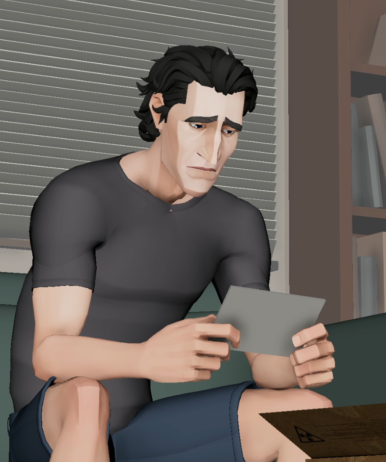
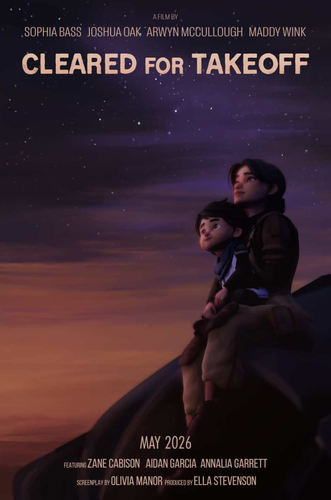
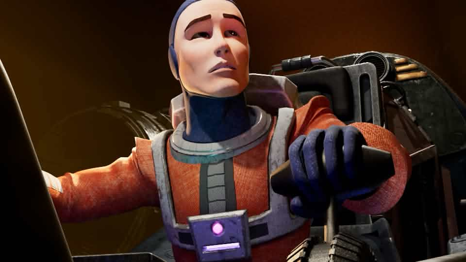
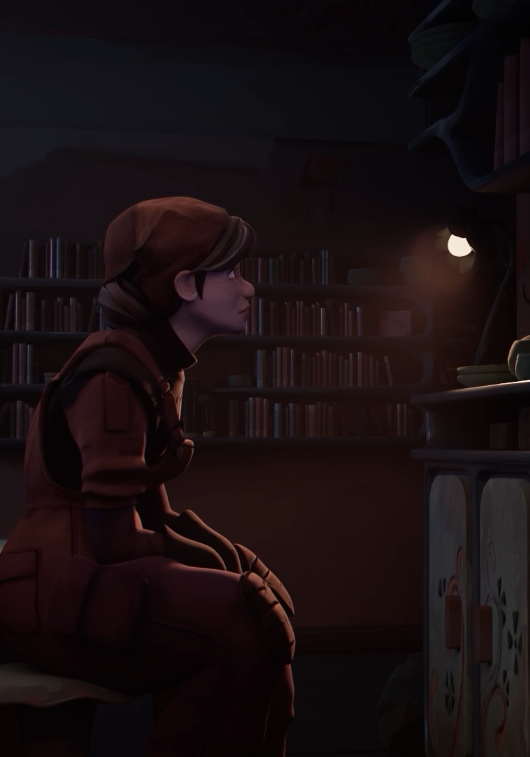
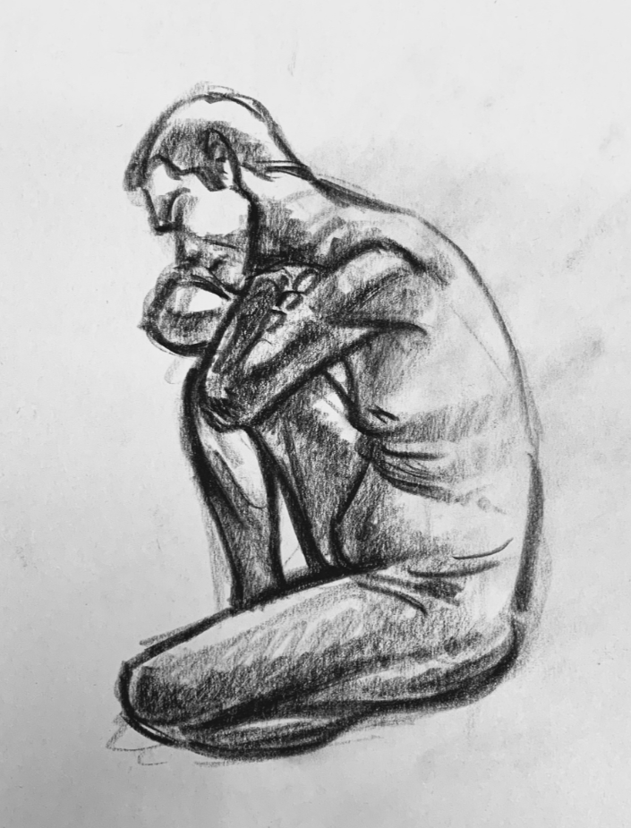

JOSHUA OAK
3D ANIMATOR & CG GENERALIST

CHARACTER ANIMATION
2026Character performance work and animation reel.

CLEARED FOR TAKEOFF
2026Senior thesis film — co-directing, writing, and animation.

SPACEMAN
2024CG animated short film — modeling, rigging, and animation.

CG LIGHTING
SELECTED WORKLighting, look development, and rendered studies.
HOUDINI & FX
SELECTED WORKProcedural experiments, simulations, and effects.
GODLY BOY
2024Live-action film — VFX Supervisor.
TRADITIONAL ART
SELECTED WORKIllustration, design, and traditional artwork.

LIFE DRAWING
SELECTED WORKFigure drawing and observational studies.
My Story
Ever since I could pick up a pencil, my sketchbooks have been filled with comic book stories and characters from my favorite movies. I originally wanted to become a comic book penciller as a kid, but veered paths in high school when a new season from my favorite show (The Clone Wars) came out. I was so inspired after watching that I decided to teach myself 3D animation on Blender. Making videos for friends and family quickly became my favorite hobby throughout high school, so I chose to pursue a formal filmmaking education in college.
I went on to study CG Animation at Chapman University’s Dodge College of Film and Media Arts, where I practiced industry standard programs and gained experience in all areas of the animation pipeline, with a specific focus on character animation. My ambition is to work professionally in the animation industry as a feature film character animator. In my free time, I enjoy reading, riding my bike, and playing guitar and piano.